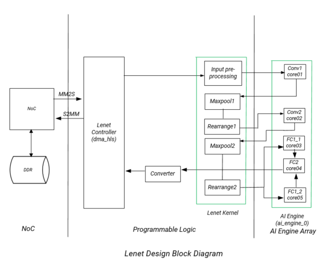

2020.2 Versal™ AI Engine LeNet Tutorial |
Table of Contents¶
Introduction¶
The Xilinx® Versal ACAP is a fully software-programmable, heterogeneous compute platform that combines the Processor System (PS) (Scalar Engines that include the Arm® processors), Programmable Logic (PL) (Adaptable Engines that include the programmable logic blocks and memory) and AI Engines which belong in the Intelligent Engine category.
This tutorial uses the LeNet algorithm to implement a system-level design to perform image classification using the AI Engine and PL logic, including block RAM (BRAM). The design demonstrates functional partitioning between the AI Engine and PL. It also highlights memory partitioning and hierarchy among DDR memory, PL (BRAM) and AI Engine memory.
The tutorial takes you through hardware emulation and hardware flow in the context of a complete Versal ACAP system integration. A Makefile is provided that you can modify to suit your own needs in a different context.
Objectives
Objectives¶
After completing the tutorial, you should be able to:
Build a complete system design by going through the various steps in the Vitis™ unified software platform flow, including creating the AI Engine Adaptive Data Flow API (ADF) graph, compiling the A72 host application and compiling PL kernels, using the Vitis compiler (V++) to link the AI Engine and HLS kernels with the platform, and packaging the design. You will also be able to run the design through the hardware emulation and hardware flow in a mixed System C/RTL cycle-accurate/QEMU-based simulator
Develop an understanding of CNN (Convolutional Neural Network) layer details using the LeNet algorithm and how the layers are mapped into data processing and compute blocks
Develop an understanding of the kernels developed in the design - AI Engine kernels to process fully connected convolutional layers and PL kernels to process the input rearrange and max pool and rearrange functions
Develop an understanding of the AI Engine IP interface using the AXI4-Stream interface
Develop an understanding of memory hierarchy in a system-level design involving DDR memory, PL BRAM, and AI Engine memory
Develop an understanding of graph control APIs to enable run-time updates using the run-time parameter (RTP) interface
Develop an understanding of performance measurement and functional/throughput debug at the application level
Tutorial overview
Tutorial Overview¶
In this application tutorial, the LeNet algorithm is used to perform image classification on an input image using five AI Engine tiles and PL resources including block RAM. A top level block diagram is shown in the following figure. An image is loaded from DDR memory through the NoC to block RAM and then to the AI Engine. The PL input pre-processing unit receives the input image and sends the output to the first AI Engine tile to perform matrix multiplication. The output from the first AI Engine tile goes to a PL unit to perform the first level of maxpool and data rearrangement (M1R1). The output is fed to the second AI Engine tile and the output from that tile is sent to the PL to perform the second level maxpooling and data rearrangement (M2R2). The output is then sent to a fully connected layer (FC1) implemented in two AI Engine tiles and uses the rectified linear unit layer (ReLu) as an activation function. The outputs from the two AI Engine tiles are then fed into a second fully connected layer implemented in the fifth AI Engine tile. The output is sent to a data conversion unit in the PL and then to the DDR memory through the NoC. In between the AI Engine and PL units is a datamover module (refer to the Lenet Controller in the figure below) that contains the following kernels:
mm2s: a Memory Mapped to Stream kernel to feed data from DDR memory through the NoC to the AI Engine Arrays2mm: a Stream to Memory Mapped kernel to feed data from the AI Engine Array through NoC to DDR memory

In the design, there are two major PL kernels. The input pre-processing unit, M1R1 and M2R2 are contained in the lenet_kernel RTL kernel which has already been packaged as a Xilinx object .xo (XO) file. The datamover kernel dma_hls provides the interface between the AI Engine and DDR memory. The five AI Engine kernels all implement matrix multiplication. The matrix dimensions depend on the image dimension, weight dimension, and number of features.
Directory Structure
Directory Structure¶
lenet
|____design......................contains AI Engine kernel, HLS kernel source files, and input data files
| |___aie_src
| | |___data
| |___pl_src
|___images......................contains images that appear in the README.md
|___Makefiles...................contains Makefile and configuration (.cfg) files and HLS kernel Vivado optimizations Tcl scripts
Before You Begin¶
Note: This tutorial targets the VCK190 ES board (see https://www.xilinx.com/products/boards-and-kits/vck190.html). This board is currently available via early access. If you have already purchased this board, download the necessary files from the lounge and ensure you have the correct licenses installed. If you do not have a board and ES license please contact your Xilinx sales contact.
Documentation: Explore AI Engine Architecture
Documentation: Explore AI Engine Architecture¶
Tools: Installing the Tools
Tools: Installing the Tools¶
Tools Documentation:
To build and run the Lenet tutorial, you will need the following tools downloaded/installed:
Install the Vitis Software Platform 2020.2
Obtain a license to enable Beta Devices in Xilinx tools (to use the
xilinx_vck190_es1_base_202020_1platform)Obtain licenses for AI Engine tools
Follow the instructions in Installing Xilinx Runtime and Platforms (XRT)
Download and setup the VCK190 Vitis Platform for 2020.2
Environment: Setting Up the Shell Environment
Environment: Setting Up the Shell Environment¶
When the elements of the Vitis software platform are installed, update the shell environment script. Set the environment variables to your system specific paths.
Edit env_setup_2020.sh script with your file paths:
export XILINX_XRT=<XRT-LOCATION>
export PLATFORM_REPO_PATHS=<YOUR-PLATFORM-DIRECTORY>
source <XILNX-TOOLS-LOCATION>/Vitis/<TOOLS-BUILD>/settings64.sh
source $XILINX_XRT/setup.sh
Then source the environment script:
source env_setup_2020.sh
Validation: Confirming Tool Installation
Validation: Confirming Tool Installation¶
which vitis
which aiecompiler
Confirm you have the VCK190 ES1 Base Platform.
platforminfo --list | grep -m 1 -A 9 vck190_es1
Output of the above command should be as follows:
"baseName": "xilinx_vck190_es1_base_202020_1",
"version": "1.0",
"type": "sdsoc",
"dataCenter": "false",
"embedded": "true",
"externalHost": "false",
"serverManaged": "false",
"platformState": "pre_synth",
"usesPR": "false",
Building the LeNet Design¶
LeNet Design Build
LeNet Design Build¶
In this section, you will build and run the LeNet design. You will compile the AI Engine design and integrate it into a larger system design (including the Programmable Logic (PL) kernels and Processing System (PS) host application). You can review Integrating the Application Section in the AI Engine Documentation for the general flow. The following image shows the Vitis tool flow with the make targets (in blue) and input source files and output file generation (in red) at each step.

At the end of this section, the design flow will generate a new directory (called build/) that contains the Work/, hw_emu/, and hw/ subfolders. The Work/ subfolder is an output from the AI Engine compiler. The hw_emu/ subfolder contains the build for hardware emulation. The hw/ subfolder contains the build for hardware run on a VCK190 board.
Make Steps¶
To run the following make steps (e.g. make kernels, make graph, etc), you must be in the Makefiles/ folder.
cd Makefiles
Build the Entire Design with a Single Command
Build the Entire Design with a Single Command¶
If you are an advanced user and are already familiar with the AI Engine and Vitis kernel compilation flows, you can build the entire design with one command:
make build TARGET=hw_emu
or
make build TARGET=hw
This command will run the make kernels make graph make xclbin make application and make package for hardware emulation or to run on hardware (VCK190 board) depending on the TARGET you specify.
You can also run the following command to build the entire Lenet tutorial and launch hardware emulation:
make run TARGET=hw_emu
make kernels: Compile PL Kernels
make kernels: Compile PL Kernels¶
In this step, the Vitis compiler takes any V++ kernels (RTL or HLS C) in the PL region of the target platform (xilinx_vck190_es1_base_202020_1) and the AI Engine kernels and graph and compiles them into their respective XO files. In this design, the dma_hls kernel is compiled as an XO file and the Lenet_kernel has already been pre-compiled as an XO file. Users can access the source code by unzipping the .xo file
unzip lenet_kernel.xo
The files will be stored under ip_repo folder.
The following commands compiles the kernels (default TARGET=hw_emu).
make kernels
The expanded command is as follow:
mkdir -p ../build/hw_emu
cd ../build/hw_emu
v++ --target hw_emu \
--platform xilinx_vck190_es1_base_202020_1 \
--save-temps \
--temp_dir _x \
--verbose \
-c ../../design/pl_src/datamover/dma_hls.cpp\
-k dms_hls \
-o dma_hls.hw_emu.xo
cd ../../Makefiles;
|Switch|Description|
| — | — |
|–target | -t [hw|hw_emu]|Specifies the build target.|
|–platform | -f|Specifies the name of a supported acceleration platform as specified by the $PLATFORM_REPO_PATHS environment variable or the full path to the platform XPFM file.|
|–save-temps | -s|Directs the Vitis compiler command to save intermediate files/directories created during the compilation and link process. Use the --temp_dir option to specify a location to write the intermediate files to.|
|–temp_dir --save-temps option is also specified.|
|–verbose|Display verbose/debug information.|
|–compile | -c|Required for compilation to generate XO files from kernel source files.|
|–kernel <arg>|-k <arg>|Compile only the specified kernel from the input file. Only one -k option is allowed per Vitis compiler command.|
|–output | -o|Specifies the name of the output file generated by the V++ command. The DMA HLS kernels output should be XO.|
|Input|Description| | — | — | |design/pl_src/datamover/dma_hls.cpp|Defines the datamover PL kernel.|
|Output|Description| | — | — | |build/hw_emu/dma_hls.hw_emu.xo|The datamover kernel object file.|
make graph: Creating the AI Engine ADF Graph for Vitis Compiler Flow
make graph: Creating the AI Engine ADF Graph for Vitis Compiler Flow¶
An ADF graph can be connected to an extensible Vitis platform (the graph I/Os can be connected either to platform ports or to ports on Vitis kernels through Vitis compiler connectivity directives.
The AI Engine ADF C++ graph of the design contains AI Engine kernels and PL kernels.
All interconnects between kernels are defined in the C++ graph
All interconnections to external I/O are fully specified in the C++ simulation testbench (
graph.cpp) that instantiates the C++ ADF graph object. Alladf::simplatform connections from graph to PLIO map onto ports on the AI Engine subsystem graph that are connected using the Vitis compiler connectivity directives. No dangling ports or implicit connections are allowed by the Vitis compiler.
To compile the graph using the Makefile flow type:
make graph
The following AI Engine compiler command compiles the AI Engine design graph:
cd ../build;
aiecompiler --include= ../design/aie_src \
--include= ../design/aie_src/data \
--verbose \
--log-level=5 \
--test-iterations=100 \
--dataflow \
--heapsize=2048 \
--workdir=Work \
../design/aie_src/graph.cpp
cd ../../Makefiles;
|Switch|Description| | — | — | |–include=<string>|Specify compile-time include directory (zero or more).| |–verbose|-v|Verbose output of the AI Engine compiler emits compiler messages at various stages of compilation. These debug and tracing logs provide useful messages on the compilation process.| |–log-level=<int>|Log level for verbose logging (default=1).| |–workdir=<string>|By default, the compiler writes all outputs to a sub-directory of the current directory, called Work. Use this option to specify a different output directory.|
The following is a description of the output objects that results from executing the AI Engine compiler (aiecompiler) command
|Inputs Sources|Description| | — | — | |design/aie_src/graph.cpp|Defines the LeNet graph object.|
|Output Objects|Description| | — | — | |build/libadf.a|Compiled AI Engine design graph| |build/Work/|Directory that contains all outputs of the AI Engine compiler.|
make xclbin: Use Vitis Tools to Link AI Engine and HLS Kernels with the Platform
make xclbin: Use Vitis Tools to Link AI Engine and HLS Kernels with the Platform¶
After the AI Engine kernels and graph and PL HLS kernels have been compiled, you can use the Vitis compiler to link them with the platform to generate both an XCLBIN and a new XSA file.
Platform¶
The Vitis tools allow you to integrate the AI Engine, HLS, and RTL kernels into an existing extensible platform. This is an automated step from a software developer perspective where the platform chosen is provided by the hardware designer (or you can opt to use one of the many extensible base platforms provided by Xilinx and the Vitis tools build the hardware design and integrate the AI Engine and PL kernels into the design.
To test this feature in this tutorial, use the base VCK190 platform to build the design.
The command to run this step is shown as follows (default TARGET=hw_emu):
make xclbin
The expanded command is as follow:
cd ../build/hw_emu;
v++ -l \
--platform xilinx_vck190_es1_base_202020_1 \
--save-temps \
--temp_dir _x \
--verbose \
--g \
--config system.cfg \
-t hw_emu \
dma_hls.hw_emu.xo \
../../design/pl_src/lenet_kernel/lenet_kernel.xo \
../build/libadf.a \
-o vck190_aie_lenet.hw_emu.xclbin
cd ../../Makefiles;
The options to run this step are as follows:
|Switch|Description|
| — | — |
|–platform | -f|Specifies the name of a supported acceleration platform as specified by the $PLATFORM_REPO_PATHS environment variable or the full path to the platform XPFM file.|
|–save-temps | -s|Directs the V++ command to save intermediate files/directories created during the compilation and link process. Use the --temp_dir option to specify a location to write the intermediate files to.|
|–temp_dir --save-temps option is also specified.|
|–verbose|Display verbose/debug information.|
|–config <config_file>|Specifies a configuration file containing V++ switches.|
|–output | -o|Specifies the name of the output file generated by the V++ command. In this design the outputs of the DMA HLS kernels and the PL kernels interfacing with the AI Engine are in XO files.|
The information to tell the linker how to connect the AI Engine and PL kernels together is described in a configuration file system.cfg. The file describes the overall connection scheme of the system.
[connectivity]
nk=dma_hls:1:dma_hls
nk=lenet_kernel_1_0:1:lenet_kernel
stream_connect=dma_hls.strm_out:lenet_kernel.s_axis_ipr
stream_connect=lenet_kernel.m_axis_ipr:ai_engine_0.prod_in1
stream_connect=lenet_kernel.m_axis_m1r1:ai_engine_0.prod_in3
stream_connect=lenet_kernel.m_axis_m2r2_0:ai_engine_0.prod_in5
stream_connect=lenet_kernel.m_axis_m2r2_1:ai_engine_0.prod_in7
stream_connect=ai_engine_0.prod_out1:lenet_kernel.s_axis_m1r1
stream_connect=ai_engine_0.prod_out2:lenet_kernel.s_axis_m2r2
stream_connect=ai_engine_0.prod_out3:dma_hls.strm_in
[advanced]
param=hw_em.enableProfiling=false
param=compiler.addOutputTypes=hw_export
|Switch|Comment|
| — | — |
|–connectivity.nk|Number of kernels. mm2s:2:mm2s_0.mm2s_1 means that the Vitis compiler should instantiate two MM2S kernels and name those instances ‘mm2s_0’ and ‘mm2s_1’.|
|–connectivity.stream_connect|How the kernels will connect to IPs, platforms, or other kernels. The output of the AI Engine compiler tell you the interfaces that need to be connected. mm2s_0.s:ai_engine_0.lte_0 means that the Vitis compiler should connect the port ‘s’ of ‘mm2s’ to the port ‘lte_0’ of AI Engine port 0. The name of the AI Engine port is one that has been defined in graph.cpp PLIO instantiation.|
|param=compiler.addOutputTypes=hw_export| This option tells the Vitis compiler that besides creating an XCLBIN file, it also outputs an XSA file which is needed to create a post-Vivado fixed platform for Vitis software developement.|
Note that the Vitis compiler calls Vivado® IP integrator under the hood to build the design. The platform and kernels are input to the Vivado Design Suite, which produces a simulation XSA or an XSA after running place and route on the design. The point at which the XSA is produced from Vivado is dependent on what -target option is set on the the Vitis compiler command line.
Note that you can now view the Vivado project, which is located in the build/[hw|hw_emu]/\_x/link/vivado/vpl/prj directory.
Now you have generated the XCLBIN file that will be used to execute your design on the platform.
make application: Compile the Host Application
make application: Compile the Host Application¶
You can compile the host application by following the typical cross-compilation flow for the Cortex-A72. To build the application run the following command:
make application
or
aarch64-linux-gnu-g++ -O \
-c \
-D__linux__ \
--sysroot=$(PLATFORM_REPO_PATHS)/sw/versal/xilinx-versal-common-v2020.2/sysroots/aarch64-xilinx-linux \
-DXAIE_DEBUG \
-I $(PLATFORM_REPO_PATHS)/sw/versal/xilinx-versal-common-v2020.2/sysroots/aarch64-xilinx-linux/usr/include/xrt \
-I $(XILINX_VITIS_AIETOOLS)/include \
-I $(PLATFORM_REPO_PATHS)/sw/versal/xilinx-versal-common-v2020.2/sysroots/aarch64-xilinx-linux/usr/include \
-I $(PLATFORM_REPO_PATHS)/sw/versal/xilinx-versal-common-v2020.2/sysroots/aarch64-xilinx-linux/usr/lib \
../build//Work/ps/c_rts/aie_control_xrt.cpp \
-o ../build/app_control.o
aarch64-linux-gnu-g++ -O \
-c \
-D__linux__ \
--sysroot=$(PLATFORM_REPO_PATHS)/sw/versal/xilinx-versal-common-v2020.2/sysroots/aarch64-xilinx-linux \
-DXAIE_DEBUG \
-I $(PLATFORM_REPO_PATHS)/sw/versal/xilinx-versal-common-v2020.2/sysroots/aarch64-xilinx-linux/usr/include/xrt \
-I $(XILINX_VITIS_AIETOOLS)/include \
-I $(PLATFORM_REPO_PATHS)/sw/versal/xilinx-versal-common-v2020.2/sysroots/aarch64-xilinx-linux/usr/include \
-I $(PLATFORM_REPO_PATHS)/sw/versal/xilinx-versal-common-v2020.2/sysroots/aarch64-xilinx-linux/usr/lib \
../design/aie_src/main.cpp \
-o ../build/lenet_app.o
aarch64-linux-gnu-g++ ../build/app_control.o \
../build/lenet_app.o \
--sysroot=$(PLATFORM_REPO_PATHS)/sw/versal/xilinx-versal-common-v2020.2/sysroots/aarch64-xilinx-linux \
-L$(PLATFORM_REPO_PATHS)/sw/versal/xilinx-versal-common-v2020.2/sysroots/aarch64-xilinx-linux/usr/lib\
-L$(XILINX_VITIS_AIETOOLS)/lib/aarch64.o \
-L$(XILINX_VITIS_AIETOOLS)/lib/lnx64.o \
-ladf_api_xrt \
-lxrt_coreutil \
-std=c++14 \
-o ../build/lenet_xrt.elf
cd ../../Makefiles;
|Switch|Description|
| — | — |
|-O | Optimize.| Optimizing compilation takes somewhat more time, and a lot more memory for a large function. With -O, the compiler tries to reduce code size and execution time, without performing any optimizations that take a great deal of compilation time.|
|-D__linux__|
|-DXAIE_DEBUG|Enable debug interface capabilities where certain core status, event status, or stack trace can be dumped out.|
|-I <dir>|Add the directory dir to the list of directories to be searched for header files.|
|-o <file>|Place output in file <file>. This applies regardless of the output being produced, whether it be an executable file, an object file, an assembler file or preprocessed C code.|
|–sysroot=<dir>|Use dir as the logical root directory for headers and libraries. For example, if the compiler would normally search for headers in /usr/include and libraries in /usr/lib, it will instead search dir/usr/include and dir/usr/lib.|
|-l<library>|Search the library named library when linking. The LeNet tutorial requires adf_api, xrt_coreutil, xrt_core, aiengine, metal, open_amp libraries.|
|-L <dir>|Add directory <dir> to the list of directories to be searched for -l.|
The following is a description of the input sources compiled by the AI Engine compiler command.
|Inputs Sources|Description|
| — | — |
|design/aie_src/main.cpp|Source application file for the lenet_xrt.elf that will run on an A72 processor.|
|build/Work/ps/c_rts/aie_control_xrt.cpp|This is the AI Engine control code generated implementing the graph APIs for the Lenet graph.|
The following is a description of the output objects that results from executing the AI Engine compiler command with the above inputs and options.
|Output Objects|Description| | — | — | |build/lenet_xrt.elf|The executable that will run on an A72 processor.|
make package: Package the Design
make package: Package the Design¶
With the AI Engine outputs created, as well as the new platform, you can now generate the Programmable Device Image (PDI) and a package to be used on an SD card. The PDI contains all executables, bitstreams, configurations of the device. The packaged SD card directory contains everything to boot Linux, the generated applications and .xclbin.
The command to run this step is as follows (default TARGET=hw_emu:
make package
or
v++ -p \
-t hw_emu \
--save-temps \
--temp_dir ../build/hw_emu/_x \
-f xilinx_vck190_es1_base_202020_1 \
--package.sd_dir $(PLATFORM_REPO_PATHS)/sw/versal/xrt \
--package.rootfs $(PLATFORM_REPO_PATHS)/sw/versal/xilinx-versal-common-v2020.2/rootfs.ext4 \
--package.kernel_image $(PLATFORM_REPO_PATHS)/sw/versal/xilinx-versal-common-v2020.2/Image \
--package.boot_mode=sd \
--package.out_dir ../build/hw_emu/package \
--package.sd_dir ../design/aie_src/data \
--package.image_format=ext4 \
--package.sd_file ../build/lenet_xrt.elf ../build/hw_emu/vck190_aie_lenet.hw_emu.xclbin ../build/libadf.a \
--package.defer_aie_run
cd ../../Makefiles;
|Switch|Description|
| — | — |
|–target | -t [hw|hw_emu]|Specifies the build target.|
|–package | -p|Packages the final product at the end of the Vitis compile and link build process.|
|–package.rootfs <arg>|Where <arg> specifies the absolute or relative path to a processed Linux root file system file. The platform RootFS file is available for download from xilinx.com. Refer to the Vitis Software Platform Installation for more information.|
|–package.kernel_image <arg>|Where <arg> specifies the absolute or relative path to a Linux kernel image file. Overrides the existing image available in the platform. The platform image file is available for download from xilinx.com. Refer to the Vitis Software Platform Installation for more information.|
|–package.boot_mode <arg>|Where <arg> specifies <ospi|qspi|sd> Boot mode used for running the application in emulation or on hardware.|
|–package.image_format|Where <arg> specifies <ext4|fat32> output image file format. ext4: Linux file system and fat32: Windows file system|
|–package.sd_file|Where <arg> specifies an ELF or other data file to package into the sd_card directory/image. This option can be used repeatedly to specify multiple files to add to the sd_card.|
|–package.defer_aie_run| Load the AI Engine application with the ELF file, but wait to run it until graph run directs it. Required in PS based AI Engine flow.|
|Inputs Sources|Description|
| — | — |
|$(PLATFORM_REPO_PATHS)/sw/versal/xrt|The PS Host Application needs the XRT headers in this folder to execute.|
|$(PLATFORM_REPO_PATHS)/sw/versal/xilinx-versal-common-v2020.2/rootfs.ext4|The Root Filesystem file for Petalinux.|
|$(PLATFORM_REPO_PATHS)/sw/versal/xilinx-versal-common-v2020.2/Image|The pre-built Petalinux Image the processor boots from.|
|design/aie_src/data|The data folder that contains the input data stored in DDR memory. It also contains the output golden refernece data the PS Host Application uses to verify the output data from the AI Engine.|
|build/hw_emu/lenet_xrt.elf|The PS Host Application executabled created in the make application step.|
|build/hw_emu/vck190_aie_lenet.hw_emu.xclbin|The XCLBIN file created in the make xclbin step.|
|build/libadf.a|The compiled AI Engine design graph created in the make graph step.|
The output of the V++ Package step is the package directory that contains the contents to run hardware emulation.
|Output Objects|Description| | — | — | |build/hw_emu/package|The hardware emulation package that contains the boot file, hardware emulation launch script, the PLM and PMC boot files, the PMC and QEMU command argument specification files, and the Vivado simulation folder.|
make run_emu: Run Hardware Emulation
make run_emu: Run Hardware Emulation¶
After packaging, everything is set to run emulation on hardware. To run emulation use the following command:
make run_emu
or
cd ../build/hw_emu/package
./launch_hw_emu.sh
When launched, you will see the QEMU simulator load. Wait for the autoboot countdown to go to zero, and after a few minutes, you will see the root Linux prompt come up:
root@versal-rootfs-common-2020_2:~#
In some cases, the following error may come up on the screen
root@versal-rootfs-common-2020_2:~# xinit: giving up
xinit: unable to connect to X server: Connection refused
xinit: server error
Enabling notebook extension jupyter-js-widgets/extension...
- Validating: OK
[C 13:46:09.233 NotebookApp] Bad config encountered during initialization:
[C 13:46:09.239 NotebookApp] No such notebook dir: ''/usr/share/example-notebooks''
The error can be neglected, press
After the root prompt comes up, run the following commands to run the design:
cd /mnt/sd-mmcblk0p1
export XLC_EMULATION_MODE=hw_emu
export XILINX_XRT=/usr
./lenet_xrt.elf a.xclbin
The lenet_xrt.elf should execute, and after a few minutes, you should see the output with TEST PASSED on the console. When this is shown, run the following keyboard command to exit the QEMU instance:
#To exit QEMU Simulation
Press CtrlA, let go of the keyboard, and then press x
TARGET=hw: Run on Hardware
TARGET=hw: Run on Hardware¶
To run your design on hardware, re-run the following steps with TARGET=hw
make kernels TARGET=hw
make xclbin TARGET=hw
make package TARGET=hw
These command create a build/hw folder with the kernels, xclbin, and package for a hardware run.
Now follow Steps 1-9 to run the lenet_xrt.elf excutable on your VCK190 board.
Step 1. Ensure your board is powered off.
Step 2. Use an SD card writer (such as balenaEtcher) to flash the sd_card.img file an SD card.
Step 3. Plug the flashed SD card into the top slot of the VCK190 board.
Step 4. Set the switch SW1 Mode[3:0]=1110 = OFF OFF OFF ON
Step 5. Connect your computer to the VCK190 board using the included USB cable.
Step 6. Open a TeraTerm terminal and select the correct COM port. Set the port settings to the following:
Port: <COMMXX>
Speed: 115200
Data: 8 bit
Parity: none
Stop Bits: 1 bit
Flow control: none
Transmit delay: 0 msec/char 0 msec/line
Step 7. Power on the board.
Step 8. Wait until you see the root@versal-rootfs-common-2020_2 Linux command prompt. Press enter a few times to get past any xinit errors.
Step 9. Run the following commands into the TeraTerm terminal:
cd /mnt/sd-mmcblk0p1
export XILINX_XRT=/usr
./lenet_xrt.elf a.xclbin
Hardware Design Details¶
LeNet Architecture and AI Engine/PL Function Partitioning
LeNet Architecture and AI Engine/PL Function Partitioning¶
The architecture of the LeNet design is show in the following figure. The details of the individual layers and their implementation will be described in a later section. This design provides an illustration of the functional partitioning between the AI Engine and PL resources, as shown in the block diagram previously. The input rearrange, maxpooling, and rearrange are scalar byte operations and interact with read/write memories to ensure sustained throughput. This set of operations are suitable to be implemented in PL rather than in the AI Engine array. With appropriate data rearrangement, the computation in the convolutional layers are presented as matrix multiplications and they are optimized to be implemented in the AI Engine array.

Design Platform Details
Design Platform Details¶
In the base platform, the CIPS, NoC and AI Engine are instantiated and interfaces among them are created. To add the various functions in a system level design, PL kernels are added to the base platform depending on the application developed, that is, the PL kernels present in each design might vary. An ADF graph is connected to an extensible Vitis platform where the graph I/Os are connected either to the platform ports or to ports on Vitis kernels through the V++ connectivity directives. For this design, the components are added by v++ -l step (make XCLBIN in the tool flow section above) and include the following:
AI Engine kernel
graph.odata mover kernel (
dma_hls.[hw|hw_emu].xo)lenet kernel (
lenet_kernel.xo)ai_engine_systemblock which includes the data width converter and clock converter kernelsany other necessary connections and interfaces
To see a schematic view of the design with the extended platform (as shown in the following figure), open in the Vivado build/[hw|hw_emu]/_x/link/vivado/vpl/prj/prj.xpr folder.

AI Engine and PL Kernel details
AI Engine and PL Kernel Details¶
The design implements the LeNet CNN to perform digital classification on gray scale images. The AI Engine kernels have been covered in the Tutorial Overview section above and more details will be provided in Software Design Details section.
The PL kernels perform the following functions:
loading input images of LeNet into block RAMs through the AXI interfaces
moving and rearranging data from one AI Engine to another.
The AI Engine kernels are mainly used to perform matrix multiplication due to their high INT8 MAC performance.
Most of the data processing function is handled in the PL kernel, lenet_kernel which comes pre-compiled and contains the following
modules.
Input Rearrange (IPR)
The LeNet algorithm in this design starts with an image of size 28x28 input imported from DDR memory through the NoC. An input rearrange function is implemented in PL to arrange pixels from the input according to a 5x5 convolution kernel and pad with seven zeros to form 32 pixels to form a 576x32 matrix. The matrix is sent to the first AI Engine tile (Conv1) via AXI4-Stream to perform matrix multiplication.
Max Pool and Data Rearrangement set 1 (M1R1)
Pooling is the operation in CNN to enable the detection of the object when presented with different versions of the images by reducing the size of the feature map. Among the types of pooling, the max is chosen to account for distortion. In this design, the output from the first AI Engine tile (core01) is a 576x8 matrix, which is sent to PL. Each of the columns in the matrix correspond to a 24x24 dimensional image laid out in the row major format. The network being implemented has only six output features for the Conv1 layers and hence two of the eight columns do not contain real images. Then a maxpool operation is performed and a value is returned from a 2x2 matrix, as seen in green squares in the following diagram.

The resulting 144 x 8 byte matrix, which is stored in RAMB36 module, then goes through a rearrange operation, where the data is written into six RAMB18s populated with zeros in the appropriate positions and the addresses are generated by the fanout table. Each RAMB18 is configured as 2048 x 8 (depth x width). The arrays then go through a second stage or rearrange operation where each array is configured in read mode and 512 x 32. These block RAMS are rearranged to four block RAMS and five register files After the rearrange function, the data is output as six images each of 64 x 25 dimension. The data for the previous image needs to be sent out to memory mapped AXI4 before the writing of the new image starts.
Also in M1R1 are two instances of the AXI2BRAM module, one at the PL-AI Engine interface and another at the AI Engine-PL interfaces. At the PL-AI Engine interface, data is coming into the module in AXI4-stream format from the AI Engine.
The AXI stream supplies a data rate of 128 bits/cycle at 250 MHz and the is written into four 32-bit RAMB 18. A corresponding set of operations is performed at the AI Engine-PL interface.
Max Pool and Data Rearrangement set 2 (M2R2)
This module performs the similar operations of max pooling and data rearrangement to M1R1 but on a smaller set of the feature map. It moves and rearranges data from AI Engine tile, core02, to AI Engine tiles, core03 and core05. The output from the second AI Engine tile, core02, is sent to the PL as 16 images of 8x8 representing the 2D image as a column in a row major order is laid out as an array of 64 x 16 bytes array. Then a maxpool operation is performed and a value is returned from a 2x2 matrix. The results are stored in a register file configured as 16 images of 4x4 bytes which then are rearranged before being sent out using two AXI4-Stream to the two AI Engine tiles, core03 and core05.
Data Mover Kernel
The PL based data mover kernel consist of MM2S and S2MM kernels. This module gets the initial image from DDR memory through the NoC and sends the data to AI Engine tile, core01 (after input processing unit inside lenet_kernel). It also receives data from AI Engine tile, core04, and streams out the data to DDR memory through the NoC. The side facing NoC uses a memory mapped AXI4 interface (MM-AXI4) and the side facing the AI Engine array uses an AXI4-Stream interface.
Design Implementation
Design Implementation¶
The following table provides details on the design implementation. It includes image dimensions, weight dimensions, and number of features in each layer.

Notes:
[1] One image on 5x5 kernel with bias value of 1
[2] Rearrange2 fanouts to two AI Engine tiles (core03 and core05) to implement the FC1+RELU layer
Software Design Details¶
The software design in the Lenet tutorial consists of the following sections:
AI Engine Kernels and Graph Representation
AI Engine Kernels and Graph Representation¶
An AI Engine kernel is a C/C++ program written using specialized intrinsic calls that target the VLIW vector processor. The AI Engine compiler compiles the kernel code to produce an executable ELF file for each of the AI Engines being used in the design. Review AI Engine Kernel Programming Section in the AI Engine Documentation for a high-level overview of kernel programming. These kernels can be stitched together to function as AI Engine graphs written in C++.
The AI Engine compiler writes a summary of compilation results called lenet.aiecompile_summary. You can view the graph by running the following command:
vitis_analyzer build/Work/lenet.aiecompile_summary
The following figure shows the graph representation of the AI Engine kernels. The five cores correspond to the description shown in the block diagram in the Tutorial Overview section; core01 implements the first convolutional layer, core02 implements the second convolutional layer, core03 and 05 implement FC1 and ReLu, and core04 implements the FC2.

Note also defined in the AI Engine graph are the weights (core<xx>lut.h). The weights are used in the matrix multiplication with the input matrix running in the AI Engine tiles. Whereas the input feature maps (IFMs) are streamed from the PL to the AI Engine, the weights are stored in the AI Engine tiles.
Data Flow Graph
Data Flow Graph¶
This section describes the overall data-flow graph specification of the LeNet design which is compiled by the AI Engine compiler. Refer to AI Engine Programming Section in the AI Engine Documentation for information on ADF graphs.
The overall graph definition of the design is contained in the graph.cpp file. The following steps describe the definition of the graph.
Define the graph class¶
Define the LeNet graph glass by using the objects defined in the appropriate name space. It must include the Adaptive Data Flow (ADF) library. All user graphs are derived from the class graph, for example in this design:
class myGraph : public adf::graph.
Declare top level ports to the graph:
public: adf::port<output> out[3]; adf::port<input> in[4];
Define the Graph Constructor¶
Use the kernel::create function to instantiate the C++ kernel objects, for example:
core01 = adf::kernel::create(core01_top);
Add Connectivity Information¶
This is done by using the templated connect<> object. The connection can be window<> or stream. If a window connection is used, then window parameters must be specified. In this description, ports are referred to by indices. An example of the connection between the input port of the graph and input of an AI Engine kernel is as follows:
adf::connect< adf::window<ROW_A * COL_A> > (in[0], core01.in[0]);
single_buffer(in[0]);
single_buffer(core01.in[0]);
In this case, the parameters correspond to the matrix dimension. Single buffer is selected instead of ping-pong buffer to keep the design simple without an impact on performance.
An example of connection of weights already loaded in AI Engine tile is:
adf::connect<>(core01lut,core01);
Based on the datatype of core01lut, the API call is inferred as a look up table in the AI Engine tile.
Set the Source File and Tile Use¶
Set the source file and tile use for each of the kernels, for example:
adf::source(core01) = "core01.cc";
adf::runtime<ratio>(core01) = 0.6;
The source file core01.cc contains the source code for core01. The ratio of the function run time compared to the cycle budget, known as the runtime ratio, must be between 0 and 1.
LeNet Top level Application¶
Define a top level application file (graph.cpp in this design) that contains an instance of the graph class and connect the graph to a simulation platform to provide file input and output, for example:
adf::PLIO *attr_i1 = new adf::PLIO("prod_in1", adf::plio_128_bits, "data/0_1/matA_in_128plio.txt");
adf::simulation::platform<4,3> platform(attr_i1,attr_i2,attr_i3,attr_i4,attr_o1,attr_o2,attr_o3);`
myGraph g;
adf::connect<> net010(platform.src[0], g.in[0]);
The main program is the driver of the graph. It is used to load,execute and terminate the graph. This is done by using the Run Time Graph control API calls, which in this design are:
{
g.init();
g.run();
g.end();
return 0;
}
PL Kernels
PL Kernels¶
In addition to kernels operating in the AI Engine array, this design specifies two kernels to run on the PL region of the device (written in HLS C++), lenet_kernel and dma_hls. Note the dma_hls kernel is brought into the design during the Vitis kernel compilation whereas the lenet_kernel is only brought in later in the V++ link stage since the kernel is pre-packaged.
The dma_hls kernel is an IP which contains dma_mm2s and dma_s2mm. dma_mm2s reads data from a memory-mapped AXI4 interface and writes it to an AXI4-Stream interface. dma_s2mm reads data from an AXI4-Stream interface and writes it to a memory-mapped AXI4 interface. The kernel specifies the following pragmas:
#pragma HLS INTERFACE m_axi
#pragma HLS INTERFACE axis
#pragma HLS INTERFACE s_axilite
#pragma HLS PIPELINE II=1
#pragma HLS DATAFLOW
PS Host Application
PS Host Application¶
The LeNet tutorial uses the Embedded processing system (PS) as an external controller to control the AI Engine graph and data mover PL kernels. Review Programming the PS Host Application Section in the AI Engine Documentation to understand the process to create a host application.
In addition to the PS host application (main.cpp), the AI Engine control code must also be compiled. This control code (aie_control_xrt.cpp) is generated by the AI Engine compiler when compiling the AI Engine design graph and kernel code.
The AI Engine control code is used by the PS host application for the following reasons:
Control the initial loading of the AI Engine kernels
Run the graph for several iterations, update the run time parameters associated with the graph, exit, and reset the AI Engine tiles.
The PS Host application stack diagram for the LeNet tutorial is shown in the following diagram.

The steps in the tutorial to run the A72 application are described as follows:
1. Include graph.cpp¶
Include the graph.cpp AI Engine application file. This file contains the instantiation of the AI Engine LeNet data flow graph object
#include graph.cpp
2. Check Command Line Argument¶
The beginning of the A72 application is represented by the main function. It takes in one command line argument: an XCLBIN file.
int main(int argc, char** argv)
3. Open XCLBIN and Create Data Mover Kernel Handles¶
The A72 application loads the XCLBIN binary file and creates the data mover kernels to be executed on the device. The steps are:
Open device and load xclbin
auto dhdl = xrtDeviceOpen(0);
auto xclbin = load_xclbin(dhdl, xclbinFilename);
auto top = reinterpret_cast<const axlf*>(xclbin.data());
Create the data mover kernel
xrtKernelHandle dmahls_khdl = xrtPLKernelOpen(dhdl, top->m_header.uuid, "dma_hls");
4. Allocate Buffers for Input Data and Results in Global Memory¶
The A72 application allocates BO (buffer objects) to store input data and output results in global memory (DDR). For example:
xrtBufferHandle in_bohdl = xrtBOAlloc(dhdl, input_size_in_bytes, 0, 0);
auto in_bomapped = reinterpret_cast<uint32_t*>(xrtBOMap(in_bohdl));
Additionally, the memcpy and memset functions are used to initialize the data in global memory.
5. Open Graph, Obtain Handle and Execute Graph¶
The following registration function is added in 2020.2 for XRT to use ADF API callbacks:
adf::registerXRT(dhdl, top->m_header.uuid);
The A72 processor opens and obtains its handle using the
xrtGraphOpenfunction.The A72 processor resets the graph using the
xrtGraphResetfunction and runs the LeNet graph execution using thexrtGraphRunfunction. Note there is no reading or updating of coefficients in the LeNet design.
6. Execute the Data Mover Kernels and Generate the Output Results¶
Open the PL kernels and obtain handles with
xrtPLKernelOpenfunction.Create kernel handle to start
dma_hlsPL kernel usingxrtRunOpenfunction.Set the
dma_hlskernel arguments usingxrtRunSetArgfunction.Start the
dma_hlskernels usingxrtRunStartfunction.Wait for
dma_hlsexecution to finish usingxrtRunWaitrunction.Close the run handles and close opened kernel handles using
xrtRunCloseandxrtKernelClose.
7. Verify Output Results¶
Compare data in out_bomapped to golden reference data in golden.h.
8. Release Allocated Resources¶
After post-processing the data, release the allocated objects using xrtBOFree, xrtGraphClose and xrtDeviceClose functions.
References¶
The following documents provide supplemental information for this tutorial.
AI Engine Documentation¶
Contains sections on how to develop AI Engine graphs, how to use the Ai Engine compiler, and AI Engine simulation, and performance analysis.
Xilinx Runtime (XRT) Architecture¶
Below are links to the XRT information used by this tutorial:
XRT Documentation: Explains general XRT API calls used in the PS Host Application.
XRT Github Repo: Contains the XRT source code.
XRT AIE API: Documents the AI Engine XRT API calls
Vitis Unified Software Development Platform 2020.2 Documentation¶
Below are links to Vitis related information referenced in this tutorial: